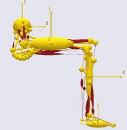

Lesson 6: Adding Real Bone Geometries#
Note
Here’s an AnyScript file to start on if you have not completed the
previous lesson: demo.lesson6.any.
So far the model graphically resembles a “stick figure representation”. However realistic bone geometries can improve both aesthetics and visual comprehension of a model’s anatomy, as illustrated by the two pictures below.
 
File formats for visualization objects#
3-D Geometric models for model components such as bones can be specified using files of the STL ASCII format.
STL is a very simple graphical file format that represents object surfaces as triangles. Virtually all CAD systems can export an object in the STL format. So if your files are in the IGES, STEP, DXF etc. formats, load them in your favorite CAD system and convert to STL.
STL files come in two varieties: ASCII and binary. AnyBody needs an ASCII file, so please make sure to choose that option during the export process.
Importing a STL file#
Since the bone models shown in the above tutorial may be a bit too elaborate for a basic tutorial, we will demonstrate this by adding an STL file for the dumbbel in the arm model.
Download the following model here(dumbell.stl).
The dumbbell STL should be added to the forearm, so add the following code - which imports the STL file into AnyBody - within the “ArmModel.Segs.ForeArm” object:
AnyDrawSeg DrwSeg = {};
AnyDrawSTL DrwSTL = {
FileName = "dumbbell.stl";
};
}; // ForeArm
Re-loading the model will result in a fully gray model view.
This is because the STL file’s units was millimeters, whereas the arm model is in meters. This means the dumbbell’s STL swallowed up the entire arm model in the model view. We will therefore scale the dumbbell model down a 1000 times, in the following way:
AnyDrawSTL DrwSTL = {
FileName = "dumbbell.stl";
ScaleXYZ = {0.001, 0.001, 0.001};
};
Post re-loading, your model should resemble the figure below.The dumbbell is visible now and has the right size, but it is sitting at the center of mass of the lower arm rather than at the hand, and is not oriented correctly.

Relocating your STL object#
When you attach something to a segment, it is by default positioned at the segment’s origin which is also its center of mass. (This was discussed earlier over here)
Therfore moving the dumbbell to the hand is as simple as relocating the “DrwSTL” object from the “ForeArm” folder to the “PalmNode” subfolder. Cut-paste the entire code for the “DrwSTL” folder into “PalmNode”, as shown below:
AnyRefNode PalmNode = {
sRel = {0.27,0,0};
AnyDrawSTL DrwSTL = {
FileName = "dumbbell.stl";
ScaleXYZ = {0.001, 0.001, 0.001};
};
};
AnyDrawSeg DrwSeg = {};
}; // ForeArm
Upon reloading, we see that the dumbbell attached to the right location, but is still not oriented correctly.

Reorienting your STL object#
Note
You can visualize a node’s local reference system, by selecting the node in the model tree (e.g., “Main.ArmModel.Segs.ForeArm.PalmNode”) and right-clicking and selecting “Model View->This object->View”.
An STL (or other geometrical) object’s axes are always oriented parallel to the local coordinate system it is attached to. By visualizing the palm node’s local reference system, you will realize that the dumbbell needs to be rotated 90 degrees about the local Y-axis.
Therefore to rotate the dumbbell by 90 degrees about the Y axis, you must rotate the “PalmNode” by 90 degrees w.r.t its parent frame, i.e. the “ForeArm”. While the vector sRel denotes the “PalmNode’s” relative location,you can add a rotation matrix ARel (optinal property) which will orient “PalmNode” w.r.t “ForeArm”.
You can use the RotMat function to generate the 3x3 rotation matrix:
AnyRefNode PalmNode = {
sRel = {0.27,0,0};
ARel = RotMat(90*pi/180, y);
AnyDrawSTL DrwSTL = {
FileName = "dumbbell.stl";
ScaleXYZ = {0.001, 0.001, 0.001};
};
};
The dumbbell’s color can be changed adding the property RGB to the STL file reference:
AnyDrawSTL DrwSTL = {
FileName = "dumbbell.stl";
ScaleXYZ = {0.001, 0.001, 0.001};
RGB = {0.2,0.4,0.5};
};
The RGB property specifies the blend of colors Red, Green, and Blue on a normalized scale of 0 to 1.

This completes the Getting Started with AnyScript tutorial. The final
result of your efforts is in demo.arm2d.any.